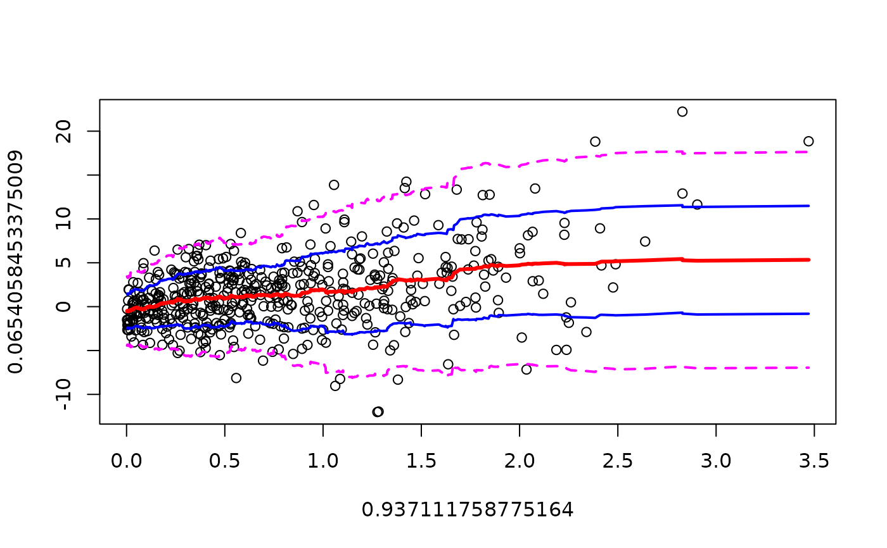

bandplot.RdPlot x-y points with curves for locally smoothed mean and standard deviation.
bandplot(x,...)
# S3 method for class 'formula'
bandplot(x, data, subset, na.action, ...,
xlab=NULL, ylab=NULL, add = FALSE, sd = c(-2:2),
sd.col=c("magenta", "blue", "red", "blue", "magenta"),
sd.lwd=c(2, 2, 3, 2, 2), sd.lty=c(2, 1, 1, 1, 2),
method = "frac", width = 1/5, n=50)
# Default S3 method
bandplot(x, y, ..., add = FALSE, sd = c(-2:2),
sd.col=c("magenta", "blue", "red", "blue", "magenta"),
sd.lwd=c(2, 2, 3, 2, 2), sd.lty=c(2, 1, 1, 1, 2),
method = "frac", width = 1/5, n=50)either formula providing a single dependent variable (y) and an single independent variable (x) to use as coordinates in the scatter plot or a numeric vector of x locations
numeric vector of y locations
an optional data.frame, list, or environment contianing
the variables used in the model (and in subset). If not found in
data, the variables are taken from environment(formula),
typically the environment from which lm is called.
an optional vector specifying a subset of observations to be used in the fitting process.
a function which indicates what should happen when the data contain NAs. The default is set by the na.action setting of options, and is na.fail if that is unset. The factory-fresh default is na.omit. Another possible value is NULL, no action. Value na.exclude can be useful.
Additional plotting parameters
x and y axis labels
Boolean indicating whether the local mean and standard deviation lines should be added to an existing plot. Defaults to FALSE.
Vector of multiples of the standard devation that should be
plotted. 0 gives the mean, -1 gives the mean minus
one standard deviation, etc. Defaults to -2:2.
Color, line width, and line type of each plotted line.
Parameters controlling the smoothing. See the
help page for wapply for details.
bandplot was created to look for changes in the mean or
variance of scatter plots, particularly plots of regression residuals.
The local mean and standard deviation are calculated by calling 'wapply'. By default, bandplot asks wapply to smooth using intervals that include the nearest 1/5 of the data. See the documentation of that function for details on the algorithm.
Invisibly returns a list containing the x,y points plotted for each line.
# fixed mean, changing variance
x <- 1:1000
y <- rnorm(1000, mean=1, sd=1 + x/1000 )
bandplot(x,y)
bandplot(y~x)
# fixed varance, changing mean
x <- 1:1000
y <- rnorm(1000, mean=x/1000, sd=1)
bandplot(x,y)
#
# changing mean and variance
#
x <- abs(rnorm(500))
y <- rnorm(500, mean=2*x, sd=2+2*x)
# the changing mean and dispersion are hard to see whith the points alone:
plot(x,y )
# regression picks up the mean trend, but not the change in variance
reg <- lm(y~x)
summary(reg)
#>
#> Call:
#> lm(formula = y ~ x)
#>
#> Residuals:
#> Min 1Q Median 3Q Max
#> -14.8064 -2.3421 0.0816 2.1645 15.4636
#>
#> Coefficients:
#> Estimate Std. Error t value Pr(>|t|)
#> (Intercept) -0.4715 0.2773 -1.700 0.0897 .
#> x 2.5576 0.2761 9.265 <2e-16 ***
#> ---
#> Signif. codes: 0 ‘***’ 0.001 ‘**’ 0.01 ‘*’ 0.05 ‘.’ 0.1 ‘ ’ 1
#>
#> Residual standard error: 3.859 on 498 degrees of freedom
#> Multiple R-squared: 0.147, Adjusted R-squared: 0.1453
#> F-statistic: 85.83 on 1 and 498 DF, p-value: < 2.2e-16
#>
abline(reg=reg, col="blue", lwd=2)
# using bandplot on the original data helps to show the mean and
# variance trend
bandplot(y ~ x)

# using bandplot on the residuals helps to see that regression removes
# the mean trend but leaves the trend in variability
bandplot(predict(reg),resid(reg))